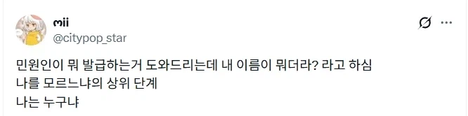
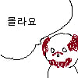
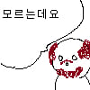

혼이 담긴 구라!
나 자신을 알라
철학적인데?ㅋㅋ
타인과 나를 분리하는 기준이 무엇인가
모를 나르느냐


너는 나에대한것을 고민하는 나를 못박아버렸구나
지가 듀스도 아니고

후엠아이
나를 아느냐(진짜 모름)
내가 나를 모르는데
틀
흔한 애니, 게임의 도입부 같네
제발 나를 알아줘
나를 아느냐(진짜 몰라서 물어봄)
우린 그를 모른다
세이 마이 네임!
유 갓뎀 라잇
ㅋㅋㅋ 이거 다행이 그냥 어르신이 혼잣말하는거라는건 왜 쏙 잘라서 가져오냐 ㅋㅋㅋ
나는 누구나 ㅋㅋㅋㅋㅋㅋ
성룡이냐
나는 누구냐
너는 누구냐
이땅에 태어난 우리 모두 신토불이
나를 모르느냐는 그냥 개진상이고 이건 좀 안 쓰럽네
그래 나는 정대만, 포기를 모르는 남자지
나는 무엇인가
치매 ON
내 이름을 말해봐라
내가 누군지 아느냐
그런데 넌 누구냐
몰아의 경지...!!